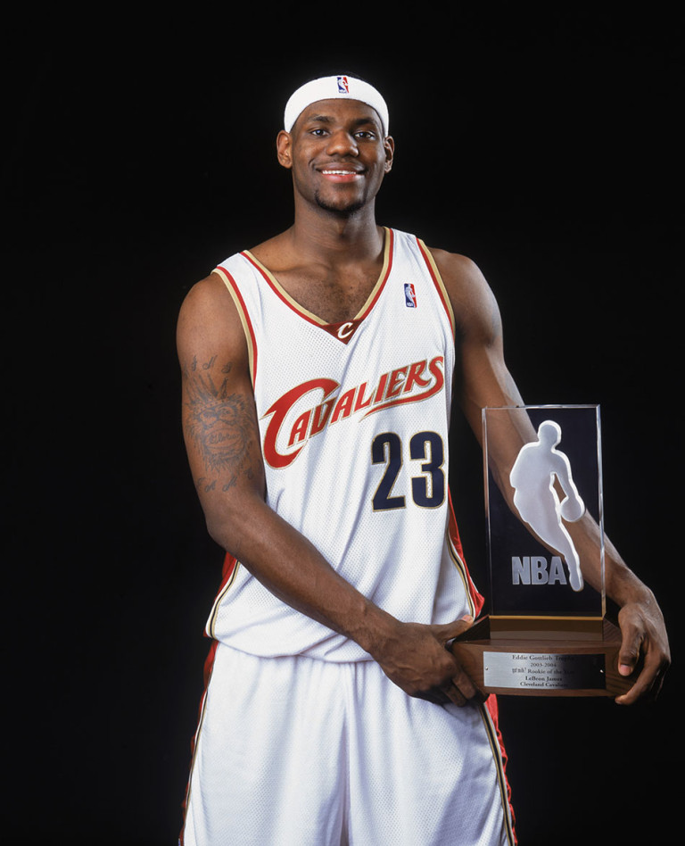
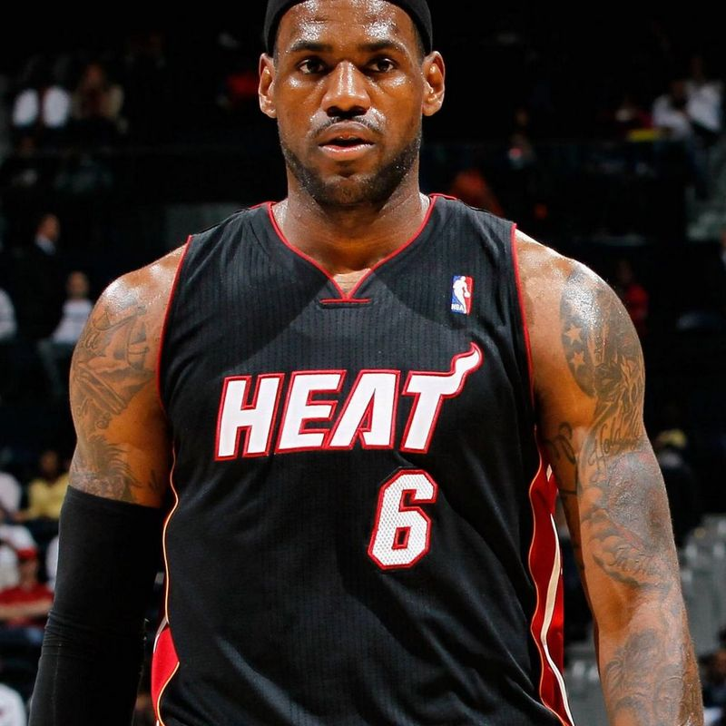
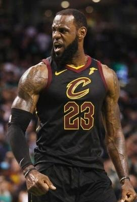

职业起步
2003年NBA选秀大会状元秀被认为没有悬念，非勒布朗·詹姆斯莫属。6月27日，詹姆斯被骑士队挑中。7月4日，詹姆斯与骑士签订了一份为期三年、总金额1296万美元的合同。7月8日，NBA夏季联赛展开，克利夫兰骑士队107-80战胜奥兰多魔术队，詹姆斯首次出现在职业比赛，得到14分，7个篮板，另有6次助攻。8月27日，詹姆斯的个人网站于正式在一个纽约晚会上启动。10月29日，骑士在客场挑战萨拉门托国王队，这是詹姆斯NBA生涯的第一场正式比赛，在比赛中他取得了25分9次助攻6个篮板以及60%的投射命中率，成为高中生处子秀得分最高的球员。11月1日骑士队85比104输给开拓者队的比赛中詹姆斯的NBA单场比赛得分第一次低于20分——他仅得到8分，全场比赛詹姆斯12投仅3中，不过他同时贡献了6次助攻。在詹姆斯NBA的前3场比赛中，他已经成为全队的头号得分手。
 新秀时期热火时期
2010年7月9日，勒布朗-詹姆斯在万众瞩目之下，终于于当地时间9点，詹姆斯透过ESPN举办的全国直播特别节目“The Decision”宣布与热火队签约。与克里斯·波什、德怀恩·韦德组成三巨头阵容。此事让克里夫兰骑士队的球迷为之气结，甚至公开烧毁市面贩售的詹姆斯球衣。12月25日对阵洛杉矶湖人的赛事中，詹姆斯取得27分、11个篮板及10次助攻的季内第三个三双。在圣诞节带领热火队击败湖人队，也是第一次有球员在圣诞大战中得到三双的成绩。在2011年NBA全明星赛上，詹姆斯砍下29分、12个篮板和10次助攻，成为继迈克尔·乔丹之后，在全明星赛上第2个拿到三双的球员。
 热火时期骑士时期
2014年7月12日，詹姆斯在《体育画报》上发表公开信，宣布将回归骑士。骑士队再次组成以詹姆斯、凯利·欧文、凯文·乐福组成的三巨头阵容。11月1日，勒布朗-詹姆斯拿到36分8个篮板，帮助骑士在客场加时赛中击败公牛，取得赛季首胜。本场比赛过后，詹姆斯职业生涯总分达到了23223分，超越了老将文斯-卡特（23197分），排在历史总得分榜第25位。
 骑士时期